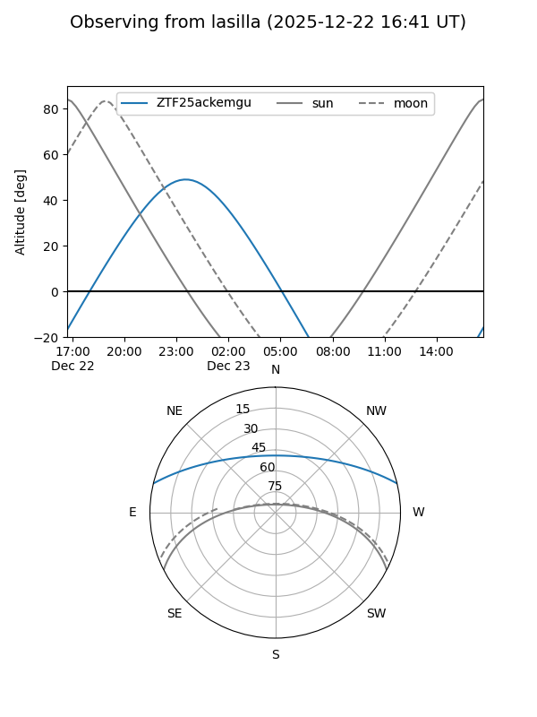
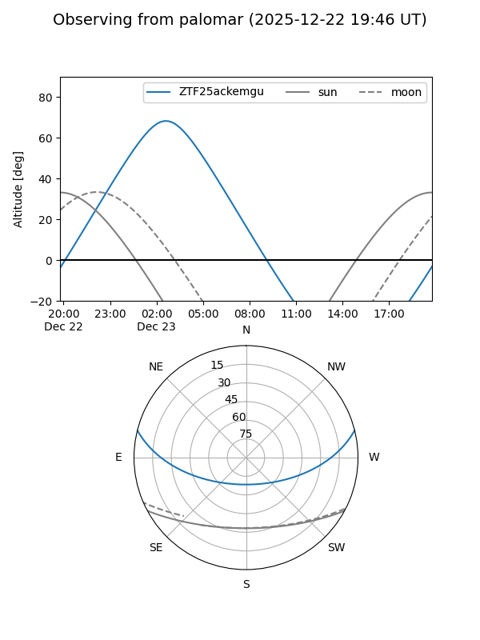

ZTF25ackemgu
Target ZTF25ackemgu at 2025-12-31 17:00
Aliases and brokers:
FINK:
Lasair:
ALeRCE:
alt names
ZTF25ackemgu (ztf,fink_ztf)
Coordinates:
equatorial (ra, dec) = 13.7527,+11.56431
equatorial (HMS+DMS) = 00:55:00.66,+11:33:51.51
galactic (l, b) = (124.3316,-51.29773)
Flags:
Photometry:
last ztfr=20.73
1 ztfr detections
Lightcurve

Visibility


Additional plots